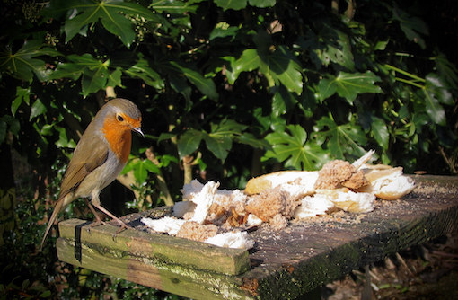

Birds in
the garden

Birds are the easiest creatures to spot in a
garden and in many ways the most interesting, since they are
always on the move. You can ensure a good complement of birds
in your garden by providing them with food, water and shelter.
Birds will naturally catch children's attention, but you can
encourage them to take more notice by involving them in
bird-related activities. The RSPB provides a wealth of useful
information on birds, and many of the links on this page take
you to locations on their web site.
Food
A bird table is not essential, but it will provide a focus for
activity, helps to keep food off the ground where it might
attract rats, and if sited fairly close to the house will
ensure a good view of feathered visitors. You can easily buy
one, or save a bit of money and perhaps engage
practically-minded children in the enterprise my making
your own.
Birds will take a wide variety of foods. The
RSPB gives a useful list of options you can buy here,
but you can also put out a variety of household
scraps, such as bread, fats, cheese and fruit. Children
can enjoy making their own gooey bird food mixes, which can be
smeared onto cones or stuffed into coconut shells and hung
from the table or from tree branches. See the guide here.
There is a special interest in watching to see what is
attracted to food you have made for yourself.
Of course birds will also take natural food from plants in
your garden. Shrubs and trees with berries, such as rowan,
hawthorn and pyracantha are a favourite, teasels will often
attract goldfinches. BBC Gardeners World provides a list of
some bird-friendly food plants here.
Water
Birds need water for drinking and bathing and the easiest way
to provide it is in a bird bath. Any shallow container heavy
enough to resist taking off on a windy day will do the trick.
If your garden is frequented by cats then a raised bath will
be best. It is entertaining to watch birds bathing, so site
your bath somewhere you can easily see them. An alternative to
a bird bath is a pond with a shallow side. This has many other
advantages for wildlife, especially insects and amphibians,
and need not be very large. See our Minipond activity for more
information on making a small pond.
Shelter and nesting
For most of the year many birds sleep at night sitting on a
branch somewhere they feel safe - this is called "roosting".
However, during the spring birds pair up and build a nest in
which they lay eggs and raise their young. If you want to
observe nesting birds it is worth installing a nest box in
your garden. This is best fixed to a tree trunk where it is
easily visible but out of direct sunlight (north- or
east-facing is best). The classic nest box with a small hole
for entry is most likely to be used by blue or great tits.
Larger birds, like blackbirds, will build a nest in bushes or
trees. Evergreen shrubs provide especially popular locations,
and will also be used for roosting outside the nesting season.
Children will enjoy watching birds collect nesting material,
and later food to feed their young. A pair of binoculars will
allow a closer look, once they have got the hang of using
them.
Identifying and recording birds
The Wildlife Trusts have compiled this
useful short guide to ten of the most common garden birds.
However, you are very likely to see other visitors from time
to time. A more comprehensive guide from the RSPB here
will generate a list of candidates based on size, colour,
location etc. Children can be encouraged to draw some of the
birds they see, either from life (tricky since they keep
moving) or from the online identification pictures. If they
keep a Nature Journal then
this provides an ideal place to make such drawings and to
record any interesting behaviour, such as nesting. The RSPB
holds an annual garden Birdwatch in late January. It is easy
to take part and children can help. You just need to set aside
one hour and count all the birds which land in your garden in
that time. You can find instructions here
and the results from this year's birdwatch are reported here.
Taking part in this might motivate children to do a little
advanced study in how to recognise common garden birds.
Finally, it is fun to try to identify birds by their song. The
calls of many of the most common birds can be found here
- you may be surprised how many of these are familiar.
Certainly I was! If you have children sleeping over with you
you might even consider taking them out into the garden early
to listen to the dawn chorus, which reaches its peak in late
spring.
{kind=link}